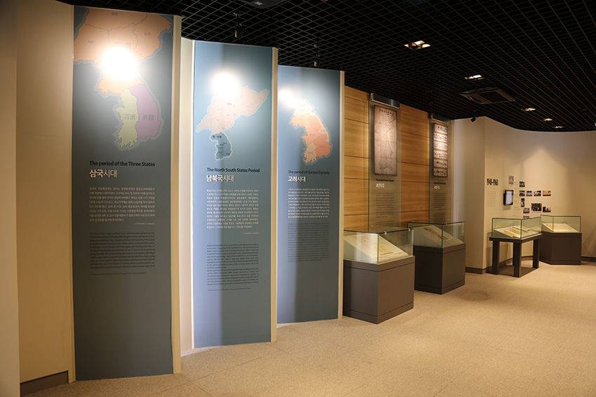
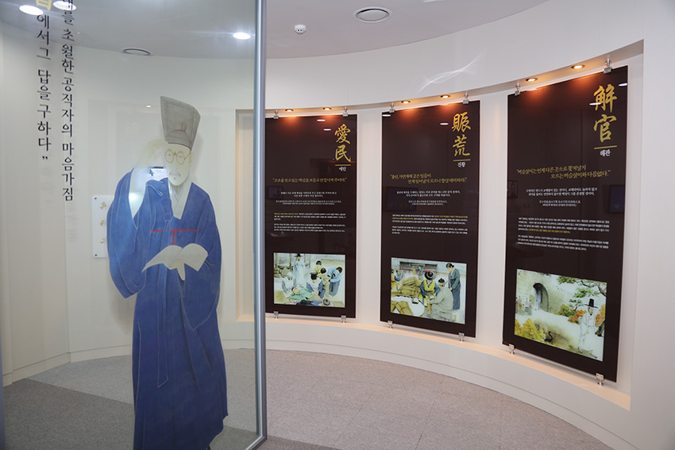
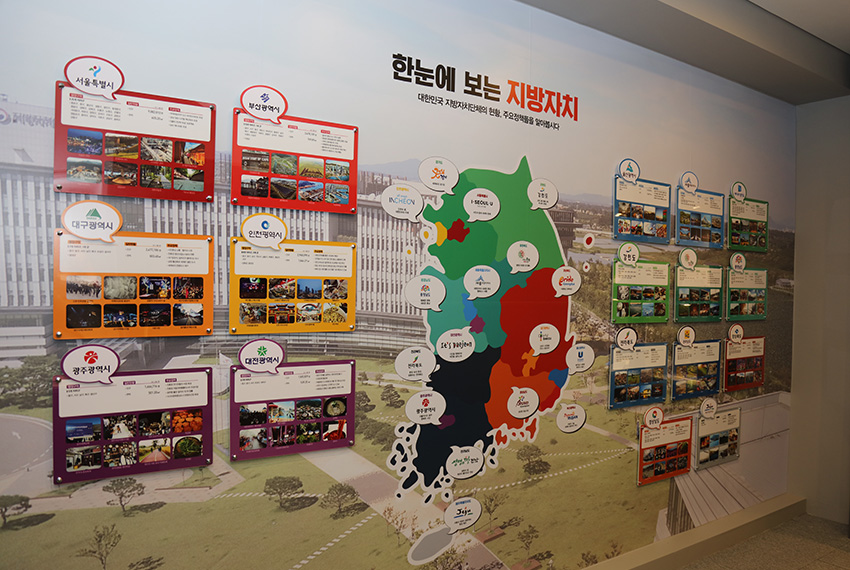

기관소개
전시관소개
전시관소개

시대별 전시관
- 삼국시대 – 남북국시대 – 고려시대 – 조선시대전기- 조선시대 후기 –갑오경장 – 일제강점기 – 미군정기 - 중앙집권 및 성장기 - 지방자치 부활 및 발전기
- 조선시대 : 호구단자(1771), 전라감영도(19C), 무주부지도, 조선토지조사사업 보고서추록
- 일제강점기 : 조선토지조사사업보고서 추록‧임야조사아장(1918), 기본재산 및 인가관계서류(1924),도제사무제요(1937), 지사훈시요지(1940), 최신개정조선구역일장(1942), 면유토지대부계약철(1942), 면유재산대장(초계면,1943)
- 미군정기 : 호봉승급표(1947), 제헌헌법(1948)
- 중앙집권 및 성장기 : 사무인계목록철(둔포면, 1953), 회의록(1956), 조례번호부(1956), 지방자치법개정법률안(1958), 다양한시기의 지방공무원 임용장(1935, 1969, 1973). 안성군절양민구호 대책위원회 회의사항(1961), 비품대장(1972), 혼인/전적/사망/출생 신고서(1970~1980)

다산 정약용「목민심서」전시실
- 목민심서 기획전시를 통한 공직가치 및 청렴의식 고취

시·도 전시 축제 등 지자체 홍보관
- 대한민국 지방자치 일반현황(인구, 면적), 주요정책, 행정구역
- 용두산 공원 시민의 종모형(부산), 돌하르방(제주), 대구에서시초된 국채보상운동(대구), 2‧28 민주운동 결의문(대구). 반구대 암각화 모형(울산), 5.18 민주화운동 기록물 유네스코 세계기록 유산 등재 인증서(광주), 대전엑스포 한빛탑 모형(대전), 백제 금동대향로(충남), 고드미바르미(충북), 경기 세계 도자기 비엔날레 캐릭터 토야(경기도), 평창 동계올림픽 유치증명서‧계약서(강원도), 남원 광한루 모형(전라북도), 대장경 경판모형(경상남도), 천마총금관모형(경상북도)
트릭아트
- 조선시대 목민관 부임 및 청백리 (청렴하고 유능한 관료에게 내리는 칭호) 트릭아트
페이지 만족도 및 담당부서 안내
현재 페이지에 만족하십니까?
페이지 내용과 사용 편의성에 대한 의견을 들려주세요.